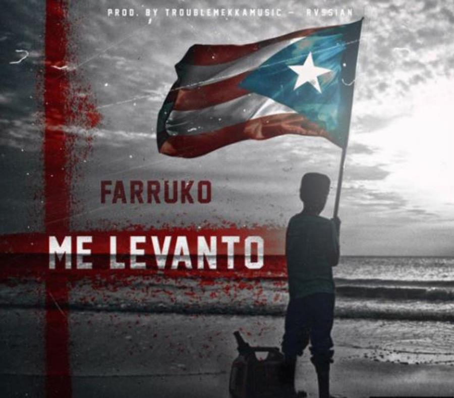

El tema servirá para recaudar fondos para los damnificados del huracán María
El cantante urbano Farruko lanzó hoy el sencillo “Me levanto”, que recoge el espíritu de lucha y esperanza y deseos de recuperación manifestado por los puertorriqueños tras el devastador paso por la isla del huracán María.
Los recaudos obtenidos por las ventas del tema de reggae, serán destinados a los damnificados del sistema, que impactó a Puerto Rico el pasado 20 de septiembre como huracán categoría 4 y dejó a sus habitantes sin servicios de energía eléctrica, agua potable y telecomunicaciones.
Previo al estreno en la plataforma digital YouTube, el reguetonero comentó en sus redes sociales que compuso la canción “para mi bella isla de Puerto Rico”.
“Si me caigo, me levanto. Aquí no hay tiempo para llanto, no, no, no, no. Boricua, levántate. Dios bendiga la isla que me vio nacer. Esto aquí no acaba, queda mucho por hacer”, son algunos de los versos que componen la lírica.
El video, de otro lado, combina imágenes en blanco y negro de lo que ha sido la vida de los boricuas tras el embate del ciclón tropical, como las largas filas por la gasolina, comunidades enteras inundadas, los ejercicios de rescate, y la comentada visita del presidente Donald Trump, con otras que recogen momentos de mayor orgullo y celebración en el país. A su vez, las intercala con tomas del intérprete con la estrella de la bandera puertorriqueña de fondo.
Es el segundo tema del cantante venezolano como solista luego de separarse de Nacho
El cantante venezolano Chyno Miranda lanzó al mercado su nuevo tema “Hasta el Ombligo” con el dúo puertorriqueño Zion y Lennox.
A través de Instagram, Chyno publicó un adelanto del videoclip de la canción e indicó que ya se encuentra disponible en todas las plataformas digitales para su descarga.
Es el segundo tema del cantante venezolano como solista, luego de separarse de su compañero por muchos años en la industria musical, José Ignacio Mendoza, mejor conocido como Nacho.